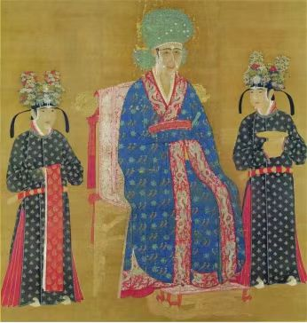
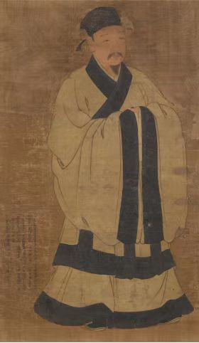
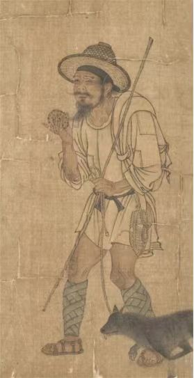
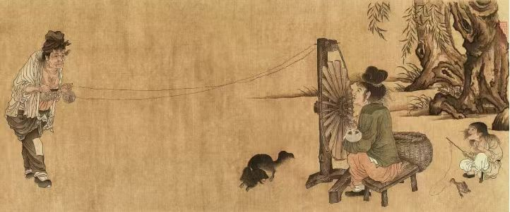
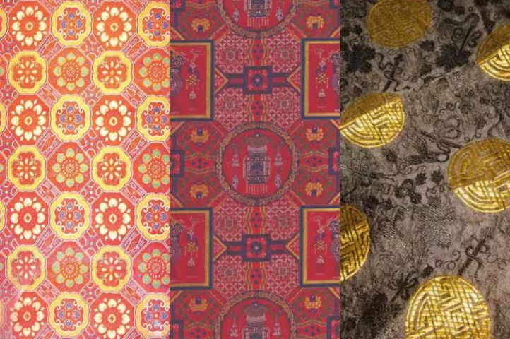
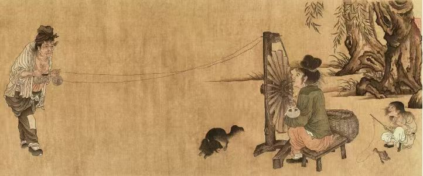
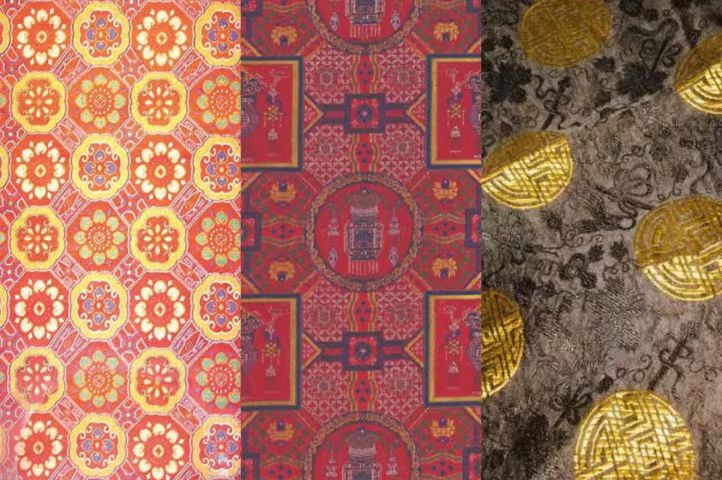
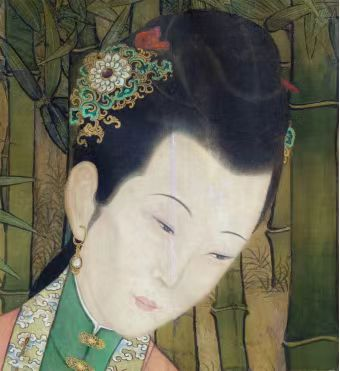
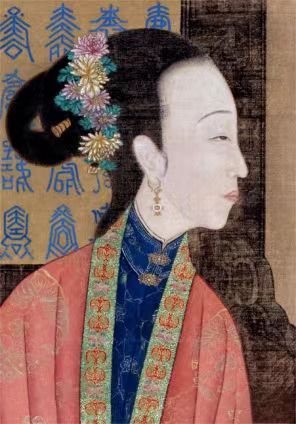
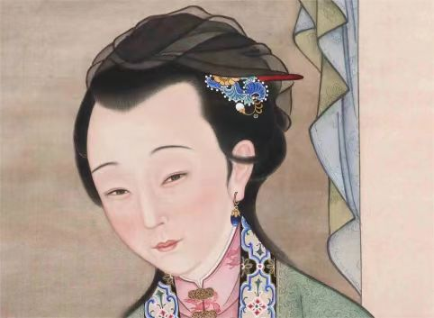

宋代服饰文化
不同于唐代的华彩张扬，宋代服饰以“清水芙蓉”的雅致美学为基调，士人阶层以直裰襕衫为常服，宽博的衣袖间流动
着“格物致知”的哲思；女性服饰尤显清丽，褙子与抹胸的经典搭配，配合百迭裙的层叠褶皱，在行走间勾勒出含蓄的风
韵。这种素简而不失精致的审美取向，既承载着“存天理”的哲学思辨，又暗涌着“民物熙熙”的世俗生机。
宋代服饰特点
两宋三百年，衣冠之制洗尽盛唐秾丽，在理学思潮与文人审美滋养下，演化出独树一帜的服饰美学。
上至宫廷下至市井，服饰既是礼制秩序的具象载体，亦是东方生活美学的凝练表达：女子以褙子束出清瘦风骨，素罗为衣、销金作缘，淡粉层叠艾绿相映，恰似水墨氤氲的江南画卷；
男子衣冠襕衫垂袖，幅巾轻绾，在宽袍缓带间勾勒出世大夫「不以物喜」的澹泊风仪。
阶层与服饰
-

皇室与贵族
-

文人士大夫
-

平民与市井
工艺与材质
 



宋代纺织业堪称古代手工业发展的巅峰，其技术革新推动了手工业的空前繁荣。
在技术层面，宋代突破传统织造工艺，手法织就纹样立体、色彩细腻的高端面料，多用于贵族服饰与礼服之中。
通过疏密有致的针脚营造层次感，再配合印金、彩绘等工艺，使织物呈现出独特的光泽与质感。
地域上，则形成了“苏杭绫罗、蜀地锦绣”的核心格局，杭州绫罗轻薄飘逸，四川蜀锦则以复杂纹样和艳丽色彩著称。
配饰：细节处见风雅
- 
- 
- 